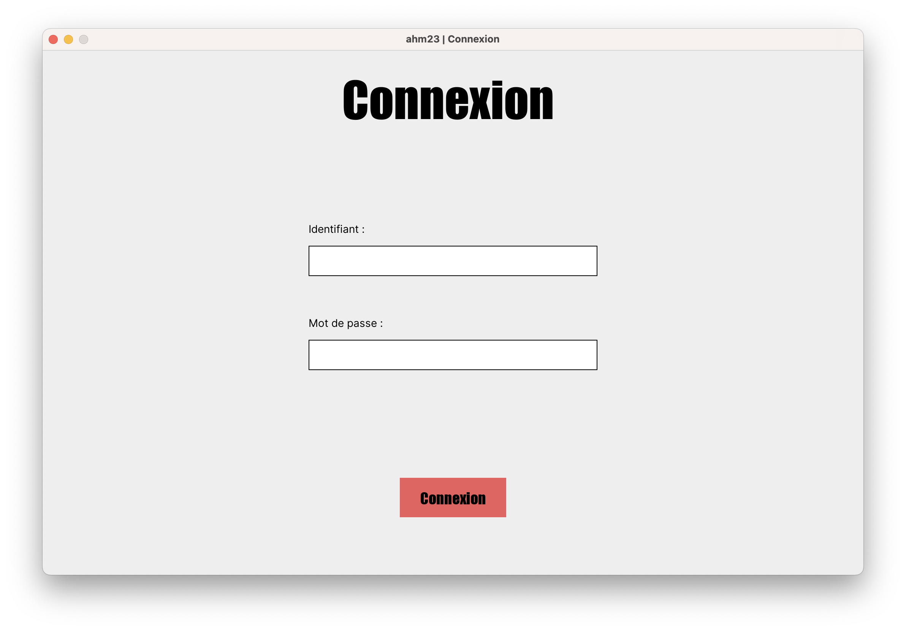
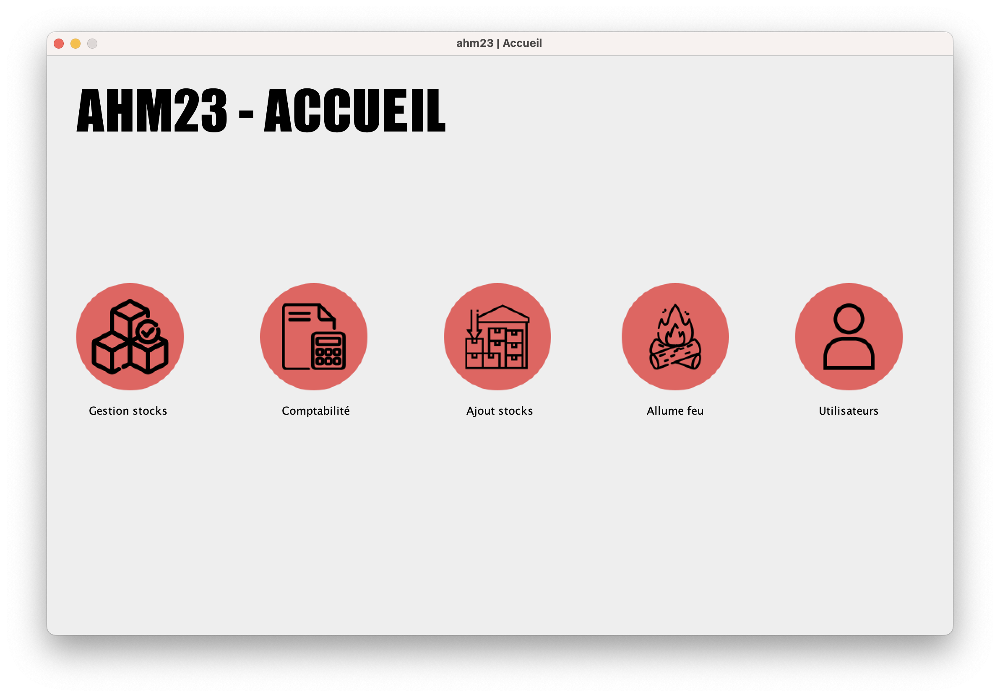
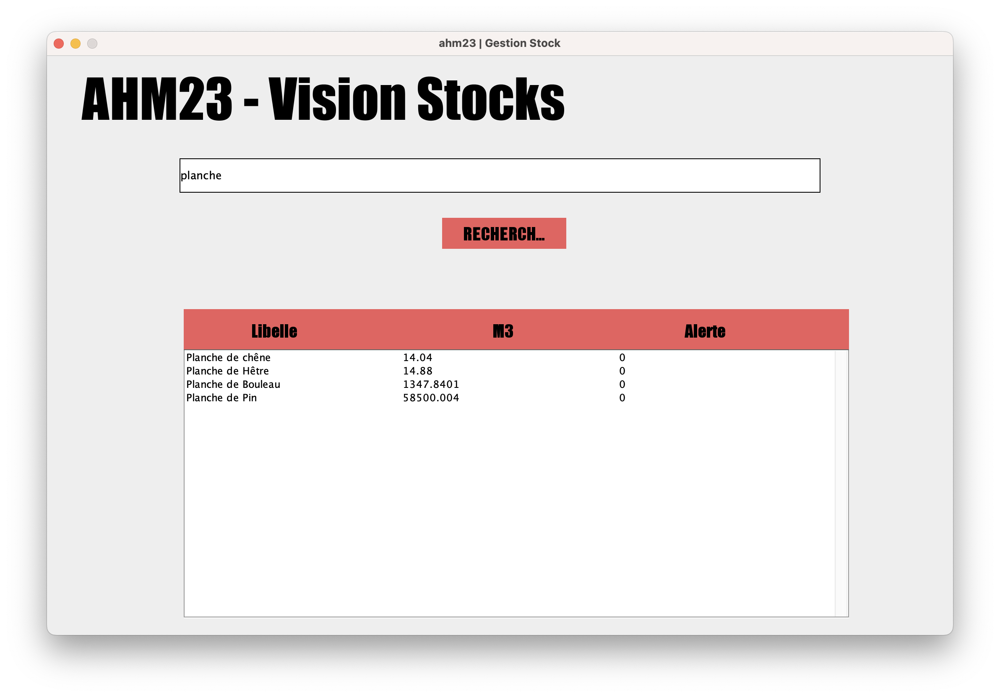
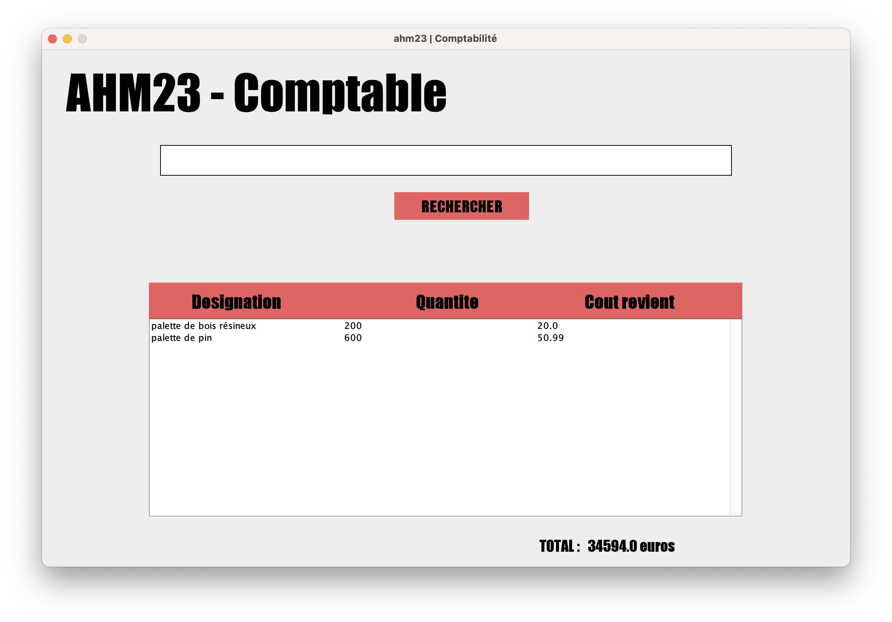
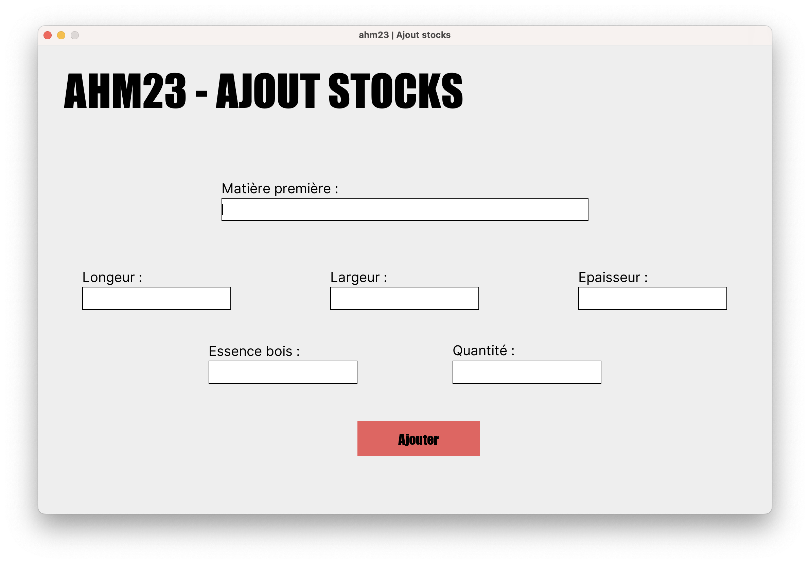
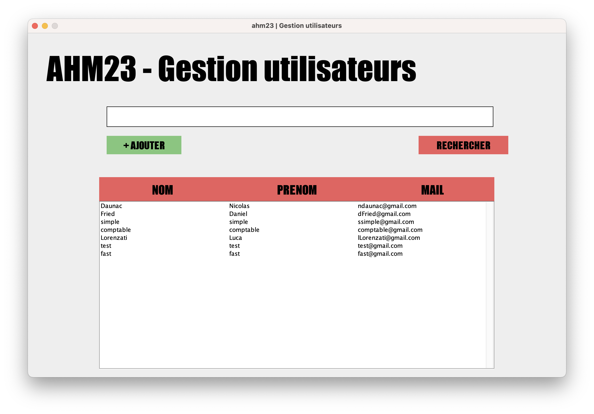
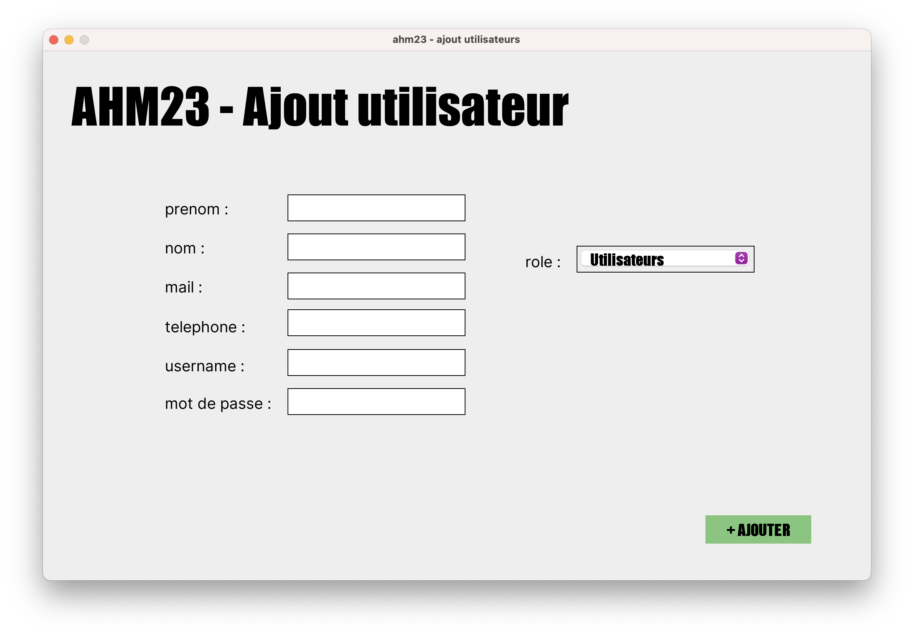

Créée en 1960 et reconnue d’utilité publique, l'association d’aide au handicap mental AHM-23 est une association départementale à but non lucratif (association loi 1901) affiliée à l'Unapei (Union nationale des associations de parents, de personnes handicapées mentales et de leurs amis). Elle œuvre en faveur des droits des personnes souffrant de handicap mental et de leurs familles, en favorisant leur insertion sociale et professionnelle.
Les Esat La Forêt et Les Mésanges ont chacun un atelier dont l'activité consiste à fabriquer des palettes sur commande pour des entreprises locales. Actuellement, le chef d’atelier de chaque site utilise une application tableur permettant la gestion des commandes de palettes pour ses clients ainsi que la gestion du stock des matières premières entrant dans la fabrication des palettes. Depuis quelques années, la demande de palettes ne cesse de croitre. Le volume mensuel de palettes fabriquées atteint actuellement 9000 exemplaires au total. De ce fait, la gestion des stocks à l’aide du tableur n’est plus concevable. Afin d'avoir une vision globale des stocks, l’AHM-23 souhaiterait disposer d’une solution web accessible par les deux sites permettant de connaître en temps réel l’état des stocks de matières premières, de palettes fabriquées et d'envisager une valorisation des déchets.
Lors du lançement de l'application nous arrivons sur une page de connexion, qui bloque l'accès à la suite si nous ne somment pas employée.
Lorsqu'ont est connecté, nous arrivons sur une page d'accueil avec 5 icone, qui nous permettent de nous déplacer sur le site
Nous avons donc la page Gestion de stock qui nous permets de visualiser en temps réel la quantité de stock disponible
Nous avons également la page comptabilité qui permet de visualiser toute les palette qui ont été créer (le nom, la quantité, le prix à l'unité et le prix total).
Nous avons la page Ajout Stocks qui permet d'ajouter des matières première au stock.
Enfin nous avons la page gestion utilisateur qui permets aux administrateur de visualiser les utilisateurs (nom, prenom et adresse mail), ainsi que créer des nouveux utilisateurs.
 